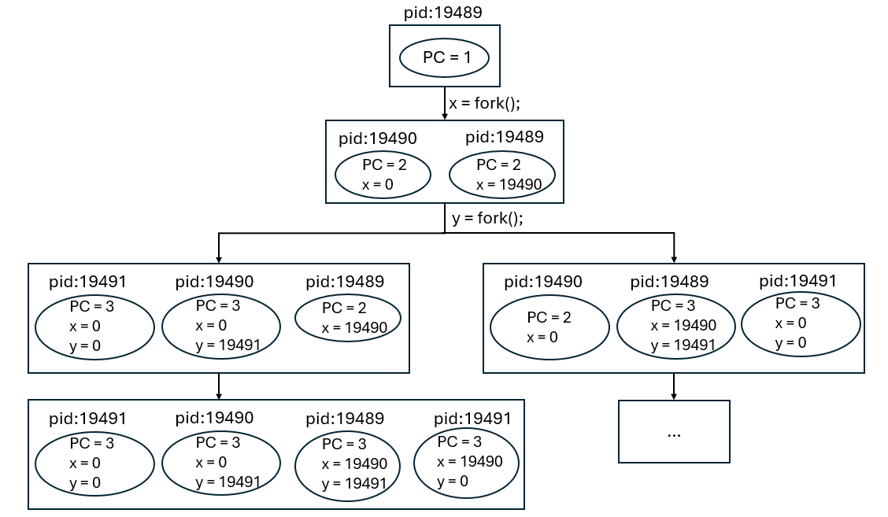
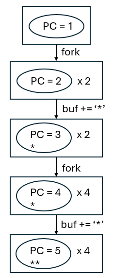

虚拟化¶
约 2146 个字 109 行代码 预计阅读时间 9 分钟
Lecture 14 操作系统上的进程¶
Take-away Messages
因为 “程序 = 状态机”，操作系统上进程 (运行的程序) 管理的 API 很自然地就是状态机的管理。在 UNIX/Linux 世界中，以下三个系统调用创建了整个 “进程世界”，不论是我们常用的 IDE 和浏览器，还是编译时在后台调用的 gcc。其中：
- fork: 对当前状态机状态进行完整复制
- execve: 将当前状态机状态重置为某个可执行文件描述的状态机
- exit: 销毁当前状态机
在对这个概念有了绝对正确且绝对严谨的理解后，操作系统也就显得不那么神秘了。
-
fork: 创建状态机。做一份状态机完整的复制 (内存、寄存器现场)。
C fork() 的行为
-
立即复制状态机
- 包括所有信息的完整拷贝
- 每一个字节的内存
- 打开的文件 (共享)
- ……
- 复制失败返回 -1
- errno 会返回错误原因 (man fork)
- 包括所有信息的完整拷贝
-
如何区分两个状态机？
- 新创建进程：得到的返回值是 0
- 执行 fork 的父进程：得到的返回值是子进程的进程号
-
-
阅读以下程序，写出运行结果
输出：
 输出：6个Hello程序等价于：

然而，
./demo-2 | wc -l输出的是8。原因：在终端里换行打印时使用的是line buffer，此时打印6个；重定向到文件或使用管道时使用的是full buffer，此时会打印8个，没有刷新buffer，导致所有带有值的buffer也被fork了。man setbuf可以看到有三种模式_IONBF unbuffered/_IOLBF line buffered/_IOFBF fully buffered。 此时程序等价于： -
execve：重置状态机。将当前进程重置成一个可执行文件描述状态机的初始状态。
execve 行为C - 执行名为
filename的程序 - 允许对新状态机设置参数
argv(v) 和环境变量envp(e)- 刚好对应了
main()的参数！
- 刚好对应了
- execve 是唯一能够 “执行程序” 的系统调用
- 因此也是一切进程 strace 的第一个系统调用
- 执行名为
-
UNIX 中实现 “创建新状态机” 的方式：fork + execve （相当于spawn）
C demo:
输出： 这比直接在bash里执行C /bin/bash -c env得到的一大堆输出更加简单，是因为我们在代码里的环境变量evnp只保留了HELLO=WORLD（当然实际上执行execve还是有PWD/SHLVL等被加上的环境变量）。 -
_exit()：销毁状态机。立即摧毁状态机，允许有一个返回值。子进程终止会通知父进程。
C 结束程序执行的三种方法
- exit(0)
- provided by libc
- 会调用 atexit
- _exit(0)
- 执行 “exit_group” 系统调用终止整个进程 (所有线程)
- 不会调用 atexit
- syscall(SYS_exit, 0)
- 执行 “exit” 系统调用终止当前线程
- 不会调用 atexit（libc当然不了解系统调用，也就无法在退出时调用libc的atexit函数）
- exit(0)
Lecture 15 进程的地址空间¶
Take-away Messages
状态机的视角自然地将我们引入 “内存到底是什么” 的问题——它的答案同样也很自然：带有访问权限控制的连续内存段。我们可以通过 mmap、munmap、mprotect 三个系统调用调整状态机的地址空间，包括分配匿名的内存、映射文件内容到内存、修改访问权限等。更有趣的是操作系统有 “能够实现一切应用程序” 的需求，调试器也不在话下——这也给了我们入侵其他进程地址空间的机制。
-
以下程序的 (可能) 输出是什么？
C 2. 查看进程的地址空间：Bash -
/proc/[pid]/maps
无需陷入内核的系统调用: vvar (data)/vdso (code)。例如时间这样的数据，只有操作系统有，而应用程序只是读时间戳，不会改它，对于这样只读的数据，无需进入操作系统内核。因此，操作系统里只读的数据可以通过内存的方式共享给进程。
-
pmap [pid]
Bash -
gdb cmd:
info proc mappings
Lecture 16 系统调用和UNIX Shell¶
-
Take-away Messages
Bugs (包括并发 bugs) 一直以来困扰着所有软件工程的实践者。我们不仅要应对 specification crisis (定义到底什么是对的)，甚至即便知道 specification，也难以应对现代软件的复杂性。为了部分应对这一点从而实现 “更正确” 的软件，我们把对程序的预期表达在程序中 (race-free, lock ordering, ...)，而不是让程序在自然状态下悄悄进入有问题的状态，就是我们目前解决程序调试问题的折中办法。“山寨” sanitizer 给我们带来的启发则是：如果我们能清楚地追溯到问题产生的本源，我们就总是能找到好的应对方法——山寨的 sanitizers 在暗中帮助你实现 fail-fast 的程序，从而减轻你调试问题的负担。
Lecture 17 C 标准库和实现¶
Take-away Messages
Bugs (包括并发 bugs) 一直以来困扰着所有软件工程的实践者。我们不仅要应对 specification crisis (定义到底什么是对的)，甚至即便知道 specification，也难以应对现代软件的复杂性。为了部分应对这一点从而实现 “更正确” 的软件，我们把对程序的预期表达在程序中 (race-free, lock ordering, ...)，而不是让程序在自然状态下悄悄进入有问题的状态，就是我们目前解决程序调试问题的折中办法。“山寨” sanitizer 给我们带来的启发则是：如果我们能清楚地追溯到问题产生的本源，我们就总是能找到好的应对方法——山寨的 sanitizers 在暗中帮助你实现 fail-fast 的程序，从而减轻你调试问题的负担。
Lecture 18 Linux 操作系统¶
Take-away Messages
Bugs (包括并发 bugs) 一直以来困扰着所有软件工程的实践者。我们不仅要应对 specification crisis (定义到底什么是对的)，甚至即便知道 specification，也难以应对现代软件的复杂性。为了部分应对这一点从而实现 “更正确” 的软件，我们把对程序的预期表达在程序中 (race-free, lock ordering, ...)，而不是让程序在自然状态下悄悄进入有问题的状态，就是我们目前解决程序调试问题的折中办法。“山寨” sanitizer 给我们带来的启发则是：如果我们能清楚地追溯到问题产生的本源，我们就总是能找到好的应对方法——山寨的 sanitizers 在暗中帮助你实现 fail-fast 的程序，从而减轻你调试问题的负担。
Lecture 19 C 可执行文件和加载¶
Take-away Messages
Bugs (包括并发 bugs) 一直以来困扰着所有软件工程的实践者。我们不仅要应对 specification crisis (定义到底什么是对的)，甚至即便知道 specification，也难以应对现代软件的复杂性。为了部分应对这一点从而实现 “更正确” 的软件，我们把对程序的预期表达在程序中 (race-free, lock ordering, ...)，而不是让程序在自然状态下悄悄进入有问题的状态，就是我们目前解决程序调试问题的折中办法。“山寨” sanitizer 给我们带来的启发则是：如果我们能清楚地追溯到问题产生的本源，我们就总是能找到好的应对方法——山寨的 sanitizers 在暗中帮助你实现 fail-fast 的程序，从而减轻你调试问题的负担。
Lecture 19 动态链接和加载¶
Take-away Messages
Bugs (包括并发 bugs) 一直以来困扰着所有软件工程的实践者。我们不仅要应对 specification crisis (定义到底什么是对的)，甚至即便知道 specification，也难以应对现代软件的复杂性。为了部分应对这一点从而实现 “更正确” 的软件，我们把对程序的预期表达在程序中 (race-free, lock ordering, ...)，而不是让程序在自然状态下悄悄进入有问题的状态，就是我们目前解决程序调试问题的折中办法。“山寨” sanitizer 给我们带来的启发则是：如果我们能清楚地追溯到问题产生的本源，我们就总是能找到好的应对方法——山寨的 sanitizers 在暗中帮助你实现 fail-fast 的程序，从而减轻你调试问题的负担。